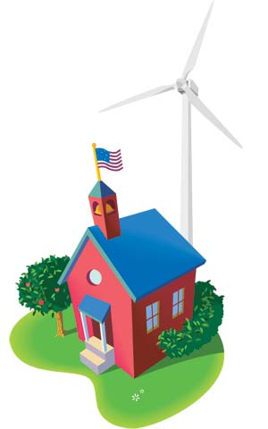

Across the United States, schools are discovering the power of wind turbines. More than 100 schools in 30 states have already installed wind energy systems, and many more are planned. These projects are popular because they save schools money by reducing their high electric bills, and because a wind turbine on school grounds can help educate the local community about the benefits of renewable energy.
How exactly does installing a wind turbine save money? The key is that it’s a long-term investment. The initial cost of the turbine pays for itself over time in reduced electric bills. Exactly how much can be saved depends on how windy the location is and how high a price the school can get for the extra electricity it produces. School wind projects aren’t ideal everywhere, but in many cases, wind pays.
Could a school wind project work for my community? Teresa Galluzzo, a research associate at the Iowa Policy Project, has done considerable research on what makes these projects successful. She co-authored a report, Wind Power and Iowa Schools, which looked at 15 schools: 10 that installed wind turbines, and five that considered wind projects but decided against them. Galluzzo says the schools that installed turbines had several things in common. “They all had significant wind resources, and all were able to negotiate a good price for the extra electricity they produced,” she says. “They also all had someone who was enthusiastic about bringing wind to their community.”
Do these projects help students learn about renewable energy? “Absolutely,” says Dan Nagengast, the Kansas facilitator of the Wind for Schools project, a federal pilot program that’s helping to install wind turbines in five Great Plains states. He says that when schools install wind turbines, they can take advantage of lesson plans that enable students to learn about the turbines. Teachers bring the data from these systems into their classrooms, and students have the chance to learn about how the technology works. “Young people really do get that we’re in a transition period away from fossil fuels,” Nagengast says. “They understand the need, and they’re going to understand the technology.”
In fact, wind turbines can help a whole community learn about wind energy, Nagengast says. “Parents love it. They say, ‘Yeah, our kids are learning something new.’” Seeing wind power in action also helps overcome some of the initial resistance they might have to wind turbines, he says, such as concerns about noise or the aesthetics of the turbines.
Galluzzo found the same thing to be true in the schools she studied in Iowa. “It’s a great way of introducing wind power,” she says. “People become familiar with it and see the benefits.” Every one of the communities where a wind turbine went up ended up being supportive of the project. “The people in the communities call them ‘our turbines,’” she says.
Wind Powering America. Find out which schools near you are putting up wind turbines, and learn more about available programs.
KidWind Project. Find resources for learning and teaching about wind power.
Windustry. Provides information on all types of wind projects, including wind in schools.
|
 ISTOCKPHOTO/CARRIE ENGLISH-MONTOYA, ISTOCKPHOTO/SIDSEL JAKOBSEN More and more schools are taking advantage of wind power opportunities. |
|
|